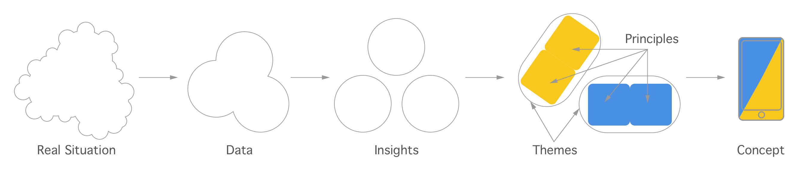
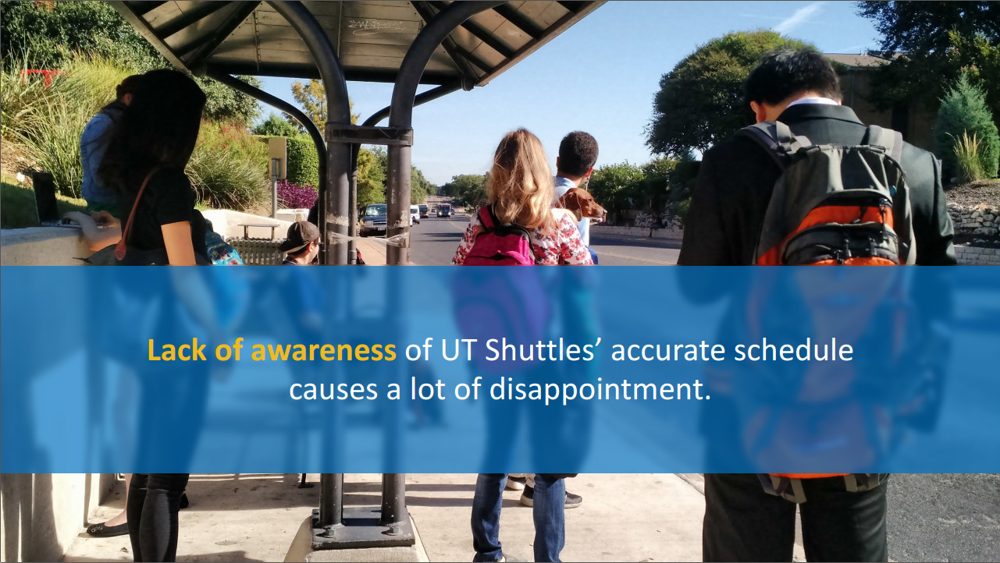
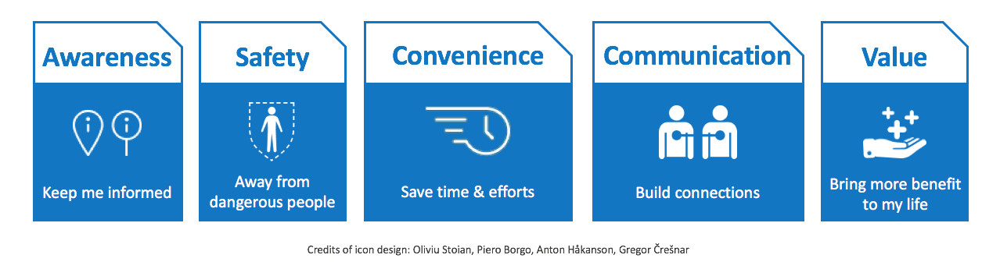
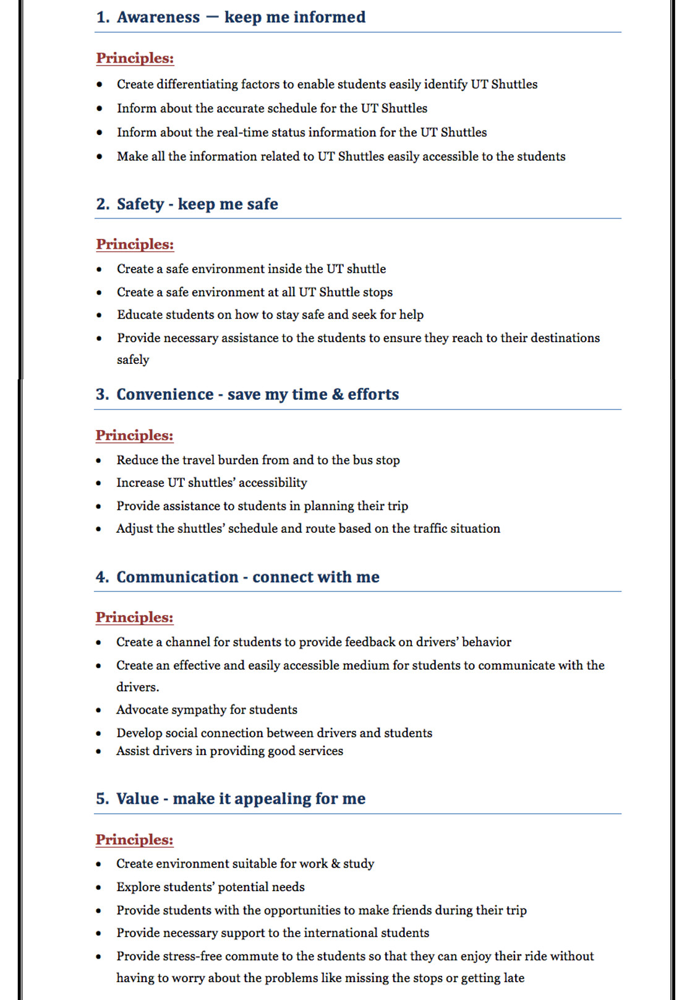
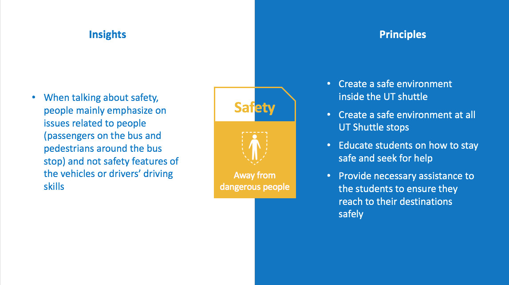
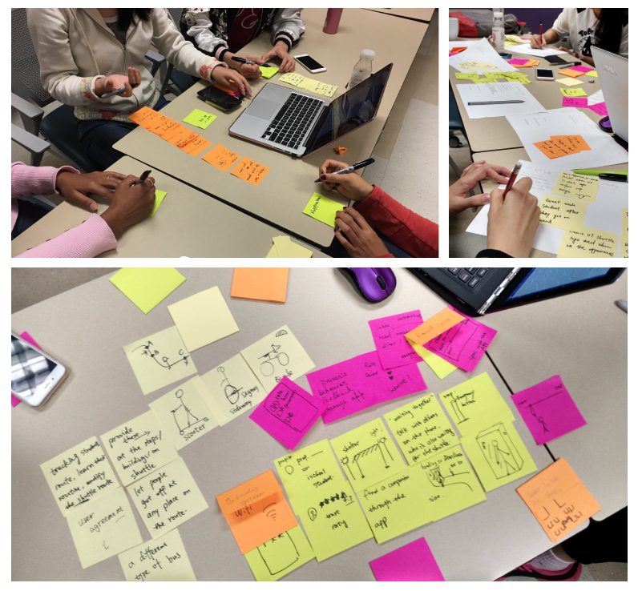
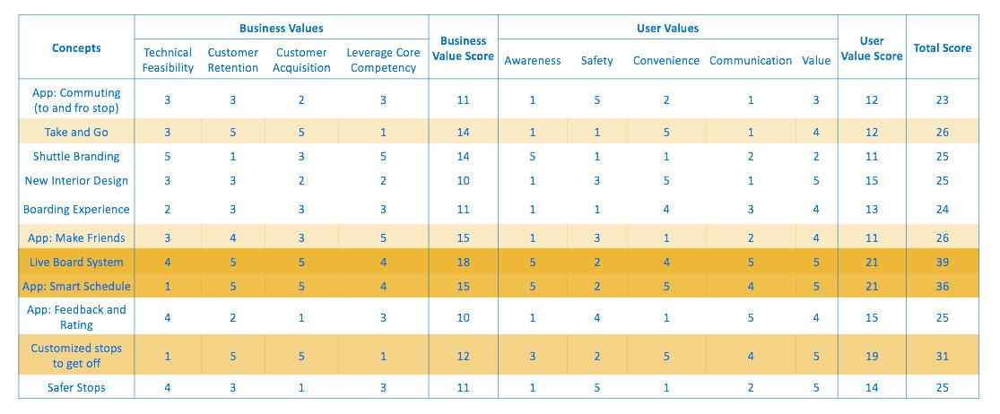
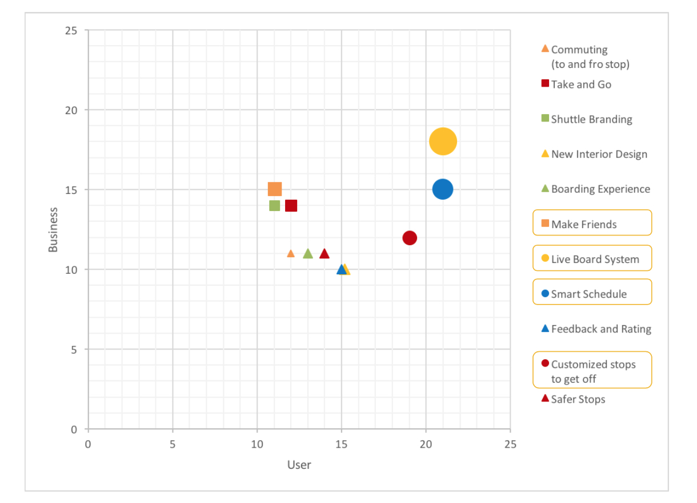
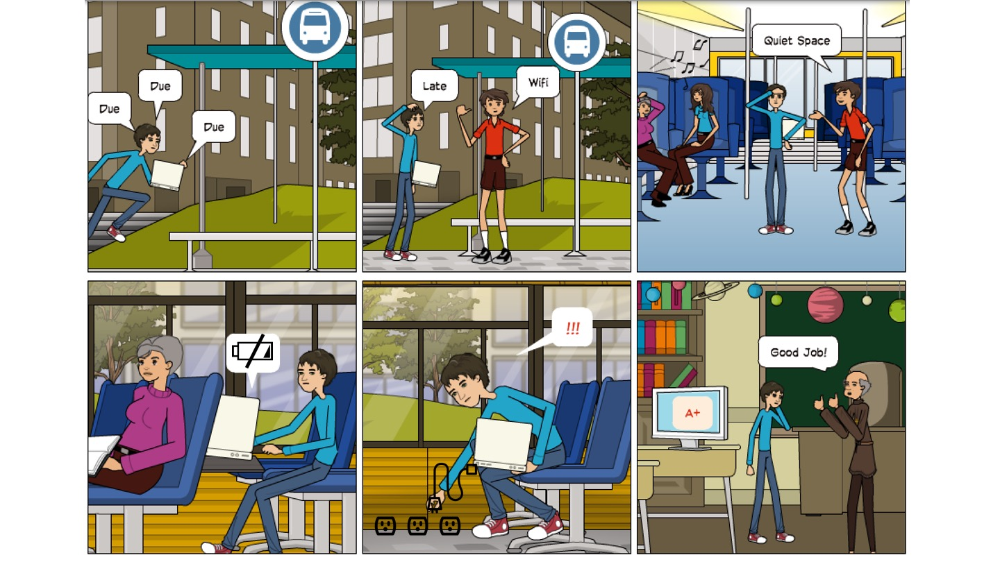
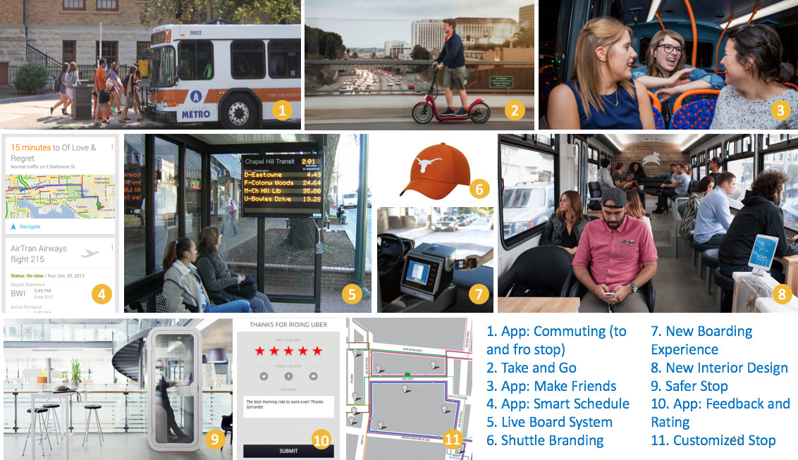

Design Thinking on UT Shuttle
The UT Shuttle consists of several routes that run between the living communities of Austin and the campus of the University of Texas at Austin. The project was initiated by my finding of UT Shuttle's declining boarding numbers (according to the company's monthly reports). Our team wanted to understand the situation and help retain and acquire users by improving the user's experience of traveling by UT Shuttle.
Project Process
It is a comprehensive process that let our team develop concepts with fully understanding of the real situation. We were able to be creative but centered around the users as well.
I made this graphic to visualize the process. I learned the process for the first time and have been constantly thinking about it. It could be confusing sometimes, so I tried to demonstrate it in a more direct way.
1. Real Situation: The facts about our project's subject. The user's true experience. It is a mixture of everything so it's hard to capture all the factors.
2. Data: It is the abstraction of the real situation. It may lose some diversities, but it captures the essentials of the real situation.
3. Insights: Elaborated from the data. It is not a description of pure observation but a finding of interesting things beneath the surface.
4. Themes: Clusters of the insights. A theme summarizes several related insights, so it is brief and powerful to help us keep it in mind.
5. Principles: Based on the themes and insights, we generate principles to note the points to be worked on and rules to follow in the following design process.
6. Concepts: Based on each principle, we brainstorm for solutions.Then we check if some of the ideas can be merged together to form a united concept.
Collect and Analyze Data
We adopted these there methods to collect data:

1. Contextual inquiry: We did 2 on 1 (1 moderator and 1 note-taker from the team, 1 interviewee) interviews with the students at UT.
2. In Context Immersion: We took the UT shuttles ourselves to experience the trips and took notes of what we did, saw, and thought.
3. Self-documentation: We asked the users to carry a diary template (fa-user-circle-o) and fill the blanks during their trips.
Affinity Diagram
We wrote information pieces of the collected data on sticky notes and sorted them out.

We categorized the notes into several fields (pink notes): doing, thinking, feeling, like, and dislike. And we marked out the frequently mentioned topics in blue notes.
Create User Journey Map
The user journey map is one type of visual framework that helps us identify gaps in understanding of problems and specific areas of opportunities.


As you can see, the two lines represent the users' feeling during the trip. When a user is commuting from home to the university campus, it usually happens before noon and the traffic is light. Due to the fact that many living communities have the UT shuttle stops within short walking distance, users are usually happy about their fist half of trip. When they arrive at the campus and need to walk a rather longer distance to get to their class, their feelings turn bad.
When the users take UT shuttles to head back to home in the afternoon, the shuttles are always crowded and the traffic is heavy. That gives the user a bad mood. But everyone would feel happy when they finally get home.
Extract Insights
We explored the systems, looked for patterns, and constructed overviews to frame good insights.

We spent some time in this process discussing whether some statements made insights or not. It is easy to confuse observation with insight sometimes. Though the observation is absolutely right, it does not help the process moving forward. In this project, we made sure that every insight represents higher-level learning from observations.
For example, one insight we had is about the lack of awareness. We found that the users need awareness not only of the planned schedule but also the live status of the shuttles. For example, we can see two shuttles in this picture. The blue one was coming towards the stop and there was an orange on the side of the road. The orange one was broken. People at the stop could see it all along during the unusually long waiting time but they didn't know when they could get on one.
Find Themes
We looked over our insights and clustered them into larger categories. We defined the themes as awareness, safety, convenience, communication, and value.
Define Principles
We defined action-oriented principles under each theme to support future concept exploration.
The insights were used as references to brainstorm design principles. For example, we had this principle came out from the specific insight:
As explained in the above image, we defined the principle that efforts should be made on both the user's side and UT Shuttle's side. More intention should be paid on the user's safety during their commuting to and waiting at the bus stop. Also, the user should learn that seeking help from a friend by talking over the phone is not enough. We should educate them the proper methods.
Develop Concepts
It is the phase we are allowed to be creative. We brainstormed on solutions based on the themes and principles.
For each brainstorm section, we set the timer up for 10 minutes. We were encouraged to bring up any idea no matter it's practical or not. No one could say "but" to an idea. It was a very efficient and productive activity. We came up with a lot of good ideas.
Sketch
Developers have the rubber duck debugging method to help them examining their work. I think sketching does the same thing as it helps designers spot problems they didn't anticipate and promotes unintended discoveries of new ideas.

In this sketch, I draw the imaginary scene of the app notifying the user to leave for catching a UT shuttle. Then I just realized that the user may ignore the notification like we snooze the alarm in the morning. So I improved this idea by letting the app tell the level of urgency. If the traffic is heavy, the user can not afford to miss the planned run.
Evaluate Concepts
After developing the concepts, we also evaluated them from the user's side and the business's side to see their value objectively.



We rated the concepts in scores. From 1 to 5, 5 means the highest score. There are 4 aspects on the business side: technical feasibility, customer retention, customer acquisition, and leverage core competency. The 5 aspects on the user side are the 5 themes: awareness, safety, convenience, communication, and value.
You can see that the live board system and the smart schedule rank the top two concepts. It’s because they meet the students’ demands of awareness, convenience, and value, and they are also the core features to retain and acquire users.
Tell Stories
To provide context to how our concepts manifest in real environments and how they work together systematically, we need to tell a good story to give our audience a sense of being in the scenario. So we made storyboards.
This one tells the story about the new interior design in UT shuttles. Dave, the boy in the blue shirt, is running for a class and the assignment is due before the class. A neighbor at the stop tells him that there's wifi and also a quiet area on the new shuttles so that he can work on his assignment. Dave is relieved. While he's about to finish the assignment, he finds that the battery is very low. Fortunately, he discovers the outlet in the shuttle. Dave makes it to the class. He submits the assignment in time and gets a great result.
Deliver Result
So finally, here are the concepts, the deliverable we had for this project:
I have learned a lot during this project. In my past class projects, the phases from extracting insights to developing concepts were usually integrated into one phase. And to be honest, less time was spent on finding deep insights. Thanks to this project, we didn't need to rush to create prototypes for the final. We were able to go deep into the research and applied real design thinking. We built these profound concepts that are qualified to become great design solutions for the UT Shuttle's improvement.